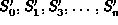
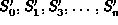
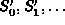
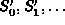

Data Structures and Algorithms
with Object-Oriented Design Patterns in C++
Data Structures and Algorithms
with Object-Oriented Design Patterns in C++
The first class of sorting algorithm that we consider
comprises algorithms that sort by insertion .
An algorithm that sorts by insertion takes the initial,
unsorted sequence,  ,
and computes a series of sorted sequences
,
as follows:
,
and computes a series of sorted sequences
,
as follows:
Figure  illustrates the insertion sorting algorithm.
The figure shows the progression of the insertion sorting algorithm
as it sorts an array of ten integers.
The array is sorted
in place .
I.e., the initial unsorted sequence, S,
and the series of sorted sequences, ,
occupy the same array.
illustrates the insertion sorting algorithm.
The figure shows the progression of the insertion sorting algorithm
as it sorts an array of ten integers.
The array is sorted
in place .
I.e., the initial unsorted sequence, S,
and the series of sorted sequences, ,
occupy the same array.
In the  step,
the element at position i in the array is inserted into the
sorted sequence which occupies array positions 0 to (i-1).
After this is done,
array positions 0 to i contain the i+1 elements of .
Array positions (i+1) to (n-1) contain
the remaining n-i-1 elements of the unsorted sequence S.
step,
the element at position i in the array is inserted into the
sorted sequence which occupies array positions 0 to (i-1).
After this is done,
array positions 0 to i contain the i+1 elements of .
Array positions (i+1) to (n-1) contain
the remaining n-i-1 elements of the unsorted sequence S.
As shown in Figure ,
the first step (i=0) is trivial--inserting an element into the empty list involves no work.
Altogether, n-1 non-trivial insertions are required
to sort a list of n elements.
 Copyright © 1997 by Bruno R. Preiss, P.Eng. All rights reserved.
Copyright © 1997 by Bruno R. Preiss, P.Eng. All rights reserved.